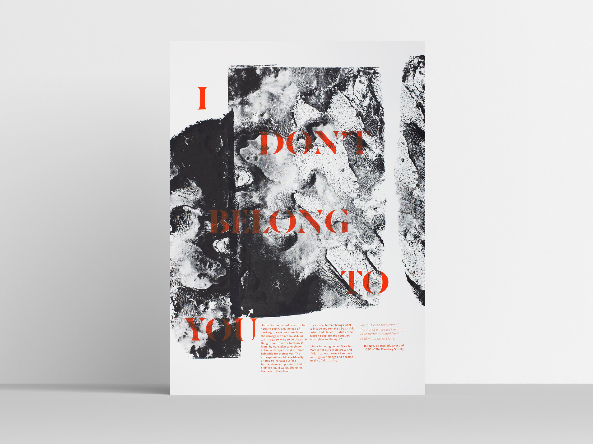
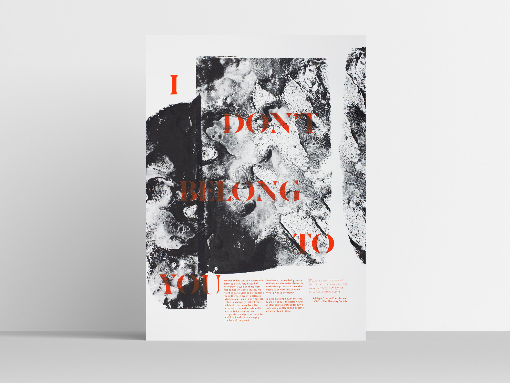
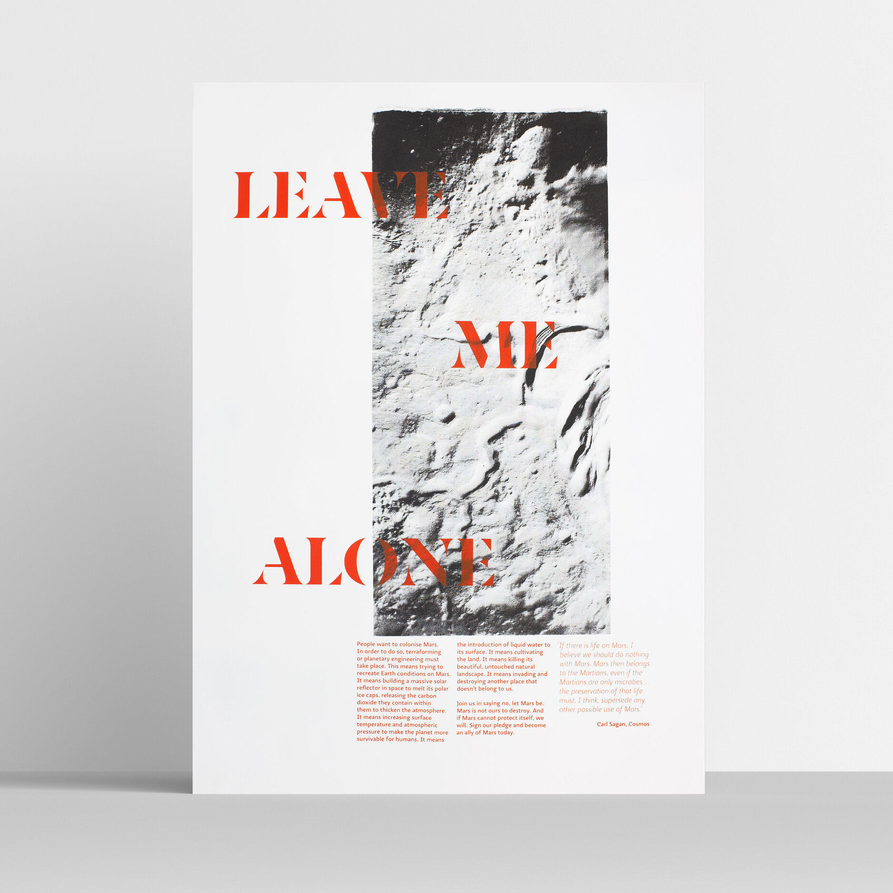

03. MARS
Identity, 2019
Most people are unaware of what colonising Mars would mean for the planet. They do not know that it would mean the destruction of its natural, beautiful landscape. This placemaking campaign is centred around creating a vulnerable persona for Mars as a body that wants to be left alone.


 




ROLE: CO-CREATIVE DIRECTION, BOOK DESIGN, STRATEGY, COPYWRITING
In collaboration with Addison Silva and Rosie Stephenson